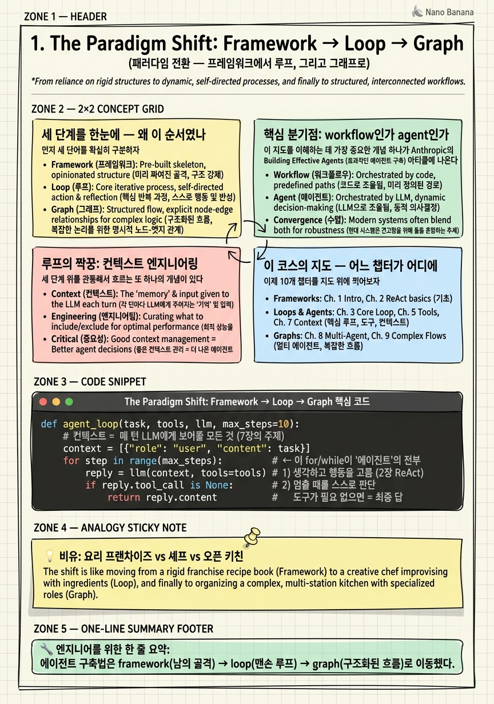

The Paradigm Shift: Framework → Loop → Graph

🎯 학습 목표
- AI 에이전트 구축 담론이 왜 framework → loop → graph 순으로 이동했는지 한 문장으로 설명할 수 있다
- '루프 엔지니어링'과 '그래프 엔지니어링'과 '컨텍스트 엔지니어링'이 각각 무엇을 가리키는지 구분한다
- workflow(정해진 경로)와 agent(스스로 경로를 정함)의 차이를 안다
- AutoGPT식 프레임워크가 왜 한물갔는지, 무엇이 그 자리를 대체했는지 설명한다
- 이 코스의 10개 챕터가 이 지도의 어디에 놓이는지 파악한다
2023년 초, AI 에이전트를 만들고 싶으면 사람들은 먼저 프레임워크를 골랐다. AutoGPT를 깔거나, LangChain의 두꺼운 Agent 클래스를 상속받거나, BabyAGI 코드를 포크했다. 마치 '에이전트'라는 게 대단히 복잡한 소프트웨어라서, 남이 만든 거대한 골격 위에 올라타야만 만들 수 있는 것처럼 느껴졌다.
그런데 2024년을 지나며 업계는 정반대의 사실을 깨달았다. 에이전트의 본질은 놀랍도록 단순했다. LLM에게 도구를 쥐여주고, 결과를 다시 보여주고, 이걸 while 루프로 반복하는 것. 그게 전부였다. 거대한 프레임워크는 이 단순한 진실을 두꺼운 추상화 아래 감추고 있었을 뿐이다. 관심의 초점은 '어떤 프레임워크를 쓸까'에서 '이 루프를 어떻게 잘 돌릴까'로 옮겨갔다. 이것이 루프 엔지니어링(loop engineering) 의 등장이다.
하지만 이야기는 여기서 끝나지 않는다. 하나의 단순한 루프로 모든 걸 처리하려니 한계가 보였다. 복잡한 작업은 병렬로 나눠야 하고, 단계마다 다른 전문가(다른 프롬프트·다른 모델)가 필요하고, 실패하면 특정 지점으로 되돌아가야 했다. 그래서 사람들은 그 루프를 명시적인 그래프로 그리기 시작했다 — 노드는 작업 단계, 엣지는 흐름의 방향. 이것이 그래프 엔지니어링(graph engineering) 이다. 이 장에서는 이 세 단계의 큰 그림을 먼저 머릿속에 심고, 나머지 챕터가 각각 어디에 해당하는지를 지도 위에 찍어본다.
핵심 내용
세 단계를 한눈에 — 왜 이 순서였나
먼저 세 단어를 확실히 구분하자. 이 코스 전체가 이 세 단어 위에 서 있다.
프레임워크 엔지니어링(Framework era) = 남이 만든 거대한 에이전트 골격(AutoGPT, 초기 LangChain Agent)을 가져다 쓰는 방식. 내가 하는 일은 '설정'에 가깝다. 골격이 알아서 생각하고 도구를 쓴다고 믿는다.
루프 엔지니어링(Loop era) = 프레임워크를 걷어내고, 에이전트의 심장인 while 루프를 내 손으로 직접 짜는 방식. '모델 호출 → 도구 실행 → 결과를 다시 넣기'를 언제 멈추고, 무엇을 다시 넣을지를 내가 통제한다.
그래프 엔지니어링(Graph era) = 그 루프가 커지면, 흐름을 노드와 엣지로 이루어진 명시적 그래프로 그리는 방식. 어떤 단계가 병렬로 돌고, 어디서 분기하고, 실패 시 어디로 되돌아가는지를 코드가 아니라 '그래프 구조'로 표현한다.
이 순서는 우연이 아니다. 추상화가 너무 높아서(프레임워크) → 너무 낮아졌다가(맨손 루프) → 딱 맞는 높이(구조화된 그래프)로 수렴하는, 소프트웨어 역사에서 반복되는 진자 운동이다. 우리는 프레임워크가 감춘 것을 루프에서 다시 배웠고, 루프가 감당 못 하는 것을 그래프에서 구조로 되찾는다.
핵심 분기점: workflow인가 agent인가
이 지도를 이해하는 데 가장 중요한 개념 하나가 Anthropic의 Building Effective Agents(2024, 6장에서 정독)에서 나온다. 바로 workflow와 agent의 구분이다.
| 구분 | Workflow | Agent |
|---|---|---|
| 경로 결정 | 사람이 코드로 미리 정함 | LLM이 실행 중에 스스로 정함 |
| 예측 가능성 | 높음 (같은 입력 → 같은 경로) | 낮음 (매번 다를 수 있음) |
| 비유 | 기차 (정해진 레일) | 택시 (기사가 길을 고름) |
| 언제 쓰나 | 단계가 뻔한 작업 | 단계를 미리 알 수 없는 작업 |
"Workflows are systems where LLMs and tools are orchestrated through predefined code paths. Agents, on the other hand, are systems where LLMs dynamically direct their own processes and tool usage." — Anthropic, Building Effective Agents
이 구분이 왜 지도의 핵심이냐면, 그래프 엔지니어링은 사실 이 둘을 한 그림 안에서 섞는 기술이기 때문이다. 큰 뼈대는 예측 가능한 workflow(그래프의 고정된 엣지)로 잡고, 그 안의 특정 노드만 자율적인 agent 루프에게 맡긴다. 순수한 자율 에이전트(모든 게 LLM 마음대로)와 순수한 워크플로우(모든 게 코드로 고정) 사이의 넓은 스펙트럼 — 그 스펙트럼을 다루는 게 이 코스의 후반부다.
루프의 짝꿍: 컨텍스트 엔지니어링
세 단계 위를 관통해서 흐르는 또 하나의 개념이 있다. 컨텍스트 엔지니어링(context engineering) 이다. 이건 framework/loop/graph와 나란한 '4번째 단계'가 아니라, 루프 시대가 열리면서 자연스럽게 부상한 운영 규율이다.
예전엔 '프롬프트를 어떻게 잘 쓸까'(prompt engineering)가 관심사였다. 프롬프트 한 방으로 끝나던 시절 얘기다. 그런데 에이전트가 루프를 돌면 매 턴마다 컨텍스트 창(context window)에 무엇을 넣을지가 계속 바뀐다 — 이전 대화, 도구 결과, 검색된 문서, 시스템 지침. 이걸 매 턴 큐레이션하는 게 진짜 실력이 되었다.
"Context engineering is the delicate art and science of filling the context window with just the right information for the next step." — Andrej Karpathy (2025)
Anthropic은 이를 더 정확히 정의한다: "the set of strategies for curating and maintaining the optimal set of tokens during LLM inference." 프롬프트 엔지니어링의 자연스러운 후계자이며, 루프가 돌면서 쌓이는 정보를 주기적으로 정제(refine) 하는 기술이다. 7장에서 이 주제만 따로 깊게 판다. 지금은 '루프 엔지니어링의 쌍둥이 규율' 정도로만 기억하면 된다.
이 코스의 지도 — 어느 챕터가 어디에
이제 10개 챕터를 지도 위에 찍어보자. 각 챕터는 그 단계를 대표하는 논문 또는 에세이 하나(때론 둘)를 앵커로 삼는다.
-
1장 (지금): 전체 지도.
-
2장 ReAct: 루프의 유전자. reason → act → observe. framework에서 loop로 넘어가는 바로 그 기점.
-
3장 Reflexion + Self-Refine: 루프에 '자기반성'을 넣다. 실패를 언어로 기록해 다음 시도를 개선.
-
4장 Voyager: 루프에 '평생 기억'을 넣다. 성공한 코드를 skill library에 쌓아 재사용.
-
5장 Generative Agents: 기억·성찰·계획을 재사용 가능한 primitive로 정립.
-
6장 Building Effective Agents: '에이전트 = 루프'라고 못 박은 결정적 피벗. framework → loop의 선언문.
-
7장 Context Engineering: 루프를 돌리는 진짜 기술 — 매 턴 컨텍스트 큐레이션.
-
8장 Tree of Thoughts (+ Graph of Thoughts): 선형 루프에서 탐색(트리·그래프)으로. loop → graph의 다리.
-
9장 ReWOO + LLMCompiler: 미리 계획하고 병렬 DAG로 실행. framework → graph의 성능 논거.
-
10장 DSPy + LangGraph: 그래프 엔지니어링의 종착점 — 최적화 가능한 파이프라인과 stateful 그래프 런타임.
왼쪽(2~5장)은 loop를 풍부하게 만드는 이야기(반성·기억·계획), 오른쪽(8~10장)은 loop를 구조화하는 이야기(탐색·병렬·그래프)다. 그 한가운데 6·7장이 '왜 루프가 primitive인가'를 못 박는 축으로 서 있다. 이 큰 그림을 잡고 나면, 각 논문이 왜 그 자리에 있는지가 선명하게 보일 것이다.
💡 비유로 이해하기
프레임워크 시대는 냉동 밀키트 프랜차이즈다. 박스를 뜯으면 모든 게 들어 있고, 매뉴얼대로 데우기만 하면 요리가 나온다. 편하지만, 소금을 언제 넣는지·불을 얼마나 올리는지 나는 전혀 모른다. 맛이 이상해도 어디를 고쳐야 할지 알 수가 없다. AutoGPT가 딱 이랬다 — 돌아가긴 하는데, 왜 그렇게 도는지 아무도 몰랐다.
루프 시대는 맨손으로 요리를 배운 셰프다. 재료를 직접 썰고, 간을 보고, 불을 조절한다. '요리란 결국 재료 → 가열 → 간보기의 반복'이라는 본질을 손으로 안다. 프랜차이즈보다 손이 많이 가지만, 무엇이든 만들 수 있고 어디가 잘못됐는지 정확히 안다. 'LLM 호출 → 도구 → 결과 반영'의 while 루프를 내 손으로 짜는 게 이것이다.
그래프 시대는 오픈 키친을 운영하는 셰프다. 이제 혼자가 아니라 여러 스테이션(전채·메인·디저트)을 동시에 돌린다. 어떤 요리는 병렬로, 어떤 건 순서대로, 실패하면 특정 스테이션만 다시. 주방 전체의 '흐름도(그래프)'를 설계하는 일이 요리 실력만큼 중요해진다. LangGraph가 바로 이 주방 흐름도다. 핵심은 — 오픈 키친을 운영하려면 먼저 맨손 셰프의 감각(루프) 이 있어야 한다는 것. 그래서 이 코스는 루프부터 시작한다.
💻 코드 예시
말보다 코드가 빠르다. 아래는 '에이전트의 본질'을 15줄로 압축한 것이다. 어떤 프레임워크도 없이, 순수 파이썬 while 루프 하나가 곧 에이전트라는 걸 보여준다. 이 골격을 머릿속에 박아두면 나머지 9장이 전부 '이 루프에 무엇을 더하고 어떻게 구조화하느냐'의 변주로 읽힌다.
def agent_loop(task, tools, llm, max_steps=10):
# 컨텍스트 = 매 턴 LLM에게 보여줄 모든 것 (7장의 주제)
context = [{"role": "user", "content": task}]
for step in range(max_steps): # ← 이 for/while이 '에이전트'의 전부
reply = llm(context, tools=tools) # 1) 생각하고 행동을 고름 (2장 ReAct)
if reply.tool_call is None: # 2) 멈출 때를 스스로 판단
return reply.content # 도구가 필요 없으면 = 최종 답
# 3) 환경과 상호작용 (act)
observation = tools[reply.tool_call.name](**reply.tool_call.args)
# 4) 결과를 컨텍스트에 되먹임 (observe) → 다음 루프로
context.append({"role": "assistant", "content": reply.raw})
context.append({"role": "tool", "content": observation})
return "max_steps 도달 — 미완료" # 무한루프 방지는 loop engineering의 기본기
핵심은 딱 세 가지다. (1) 루프의 몸통(for step in range)이 곧 에이전트다 — 이 골격을 프레임워크가 감추고 있었을 뿐이다. (2) 멈춤 조건(tool_call is None)을 누가 통제하느냐가 loop engineering의 절반이다. 여기서는 LLM이 '도구가 더 필요 없다'고 판단하면 멈추지만, 실무에선 예산·시간·반복 감지 등 여러 정지 조건을 겹겹이 건다. (3) 되먹임(context.append)이 나머지 절반이다 — 무엇을, 얼마나, 어떤 형태로 컨텍스트에 다시 넣느냐가 7장 컨텍스트 엔지니어링의 전부다. 이 15줄이 2~7장의 뼈대이고, 8~10장은 이 단일 루프를 트리·DAG·그래프로 펼치는 이야기다.
🏭 현업에서의 평가
✅ 시니어가 보는 것
- 프레임워크를 언급하기 전에 '이 문제가 자율 agent가 필요한지, 고정된 workflow로 충분한지'를 먼저 따지는가
- 에이전트를 'while 루프 + 도구 + 컨텍스트 관리'로 분해해서 설명할 수 있는가
- framework/loop/graph 중 이 문제에 맞는 추상화 수준을 근거를 들어 고를 수 있는가
- 정지 조건(비용·반복·시간)과 실패 처리를 처음부터 설계에 넣는가
⚠️ 레드 플래그
- '에이전트 = AutoGPT/LangChain'처럼 특정 프레임워크와 개념을 동일시함
- 모든 문제를 최대 자율 에이전트로 풀려 함 (workflow가 더 안전한 경우를 못 봄)
- 루프의 정지 조건·비용 상한을 언급하지 않음 (프로덕션 경험 부재 신호)
- '그래프가 최신이니까 무조건 LangGraph'처럼 유행을 근거로 도구를 고름
🎤 예상 인터뷰 질문
- AutoGPT 같은 초기 자율 에이전트 프레임워크가 프로덕션에서 외면받은 이유는 무엇인가?
- 주어진 작업을 workflow로 짤지 agent로 짤지 어떤 기준으로 판단하나?
- '에이전트는 결국 루프다'라는 말의 의미와, 그것이 설계에 주는 실질적 함의는?
✨ 핵심 요약
3단계 진화
에이전트 구축법은 framework(남의 골격) → loop(맨손 루프) → graph(구조화된 흐름)로 이동했다.
에이전트 = 루프
에이전트의 본질은 'LLM 호출 → 도구 → 결과 되먹임'을 반복하는 while 루프 하나다.
진자 운동
추상화가 너무 높았다가(프레임워크) → 너무 낮아졌다가(맨손) → 딱 맞는 높이(그래프)로 수렴하는 반복 패턴이다.
workflow vs agent
경로를 코드가 정하면 workflow, LLM이 실행 중 정하면 agent. 그래프는 둘을 한 그림에서 섞는다.
컨텍스트 엔지니어링
루프 시대의 쌍둥이 규율 — 매 턴 컨텍스트 창에 무엇을 넣을지 큐레이션하는 기술.
왼쪽은 풍부화, 오른쪽은 구조화
2~5장은 루프에 반성·기억·계획을 더하고, 8~10장은 루프를 탐색·병렬·그래프로 구조화한다.
추상화 선택이 실력
도구 이름을 아는 것보다 '이 문제에 맞는 추상화 수준을 고르는 판단'이 시니어의 조건이다.